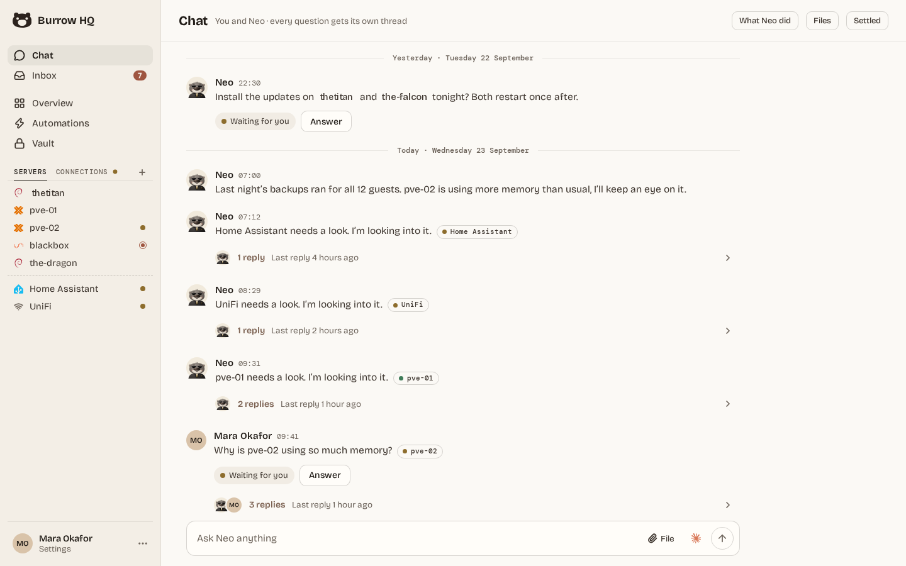
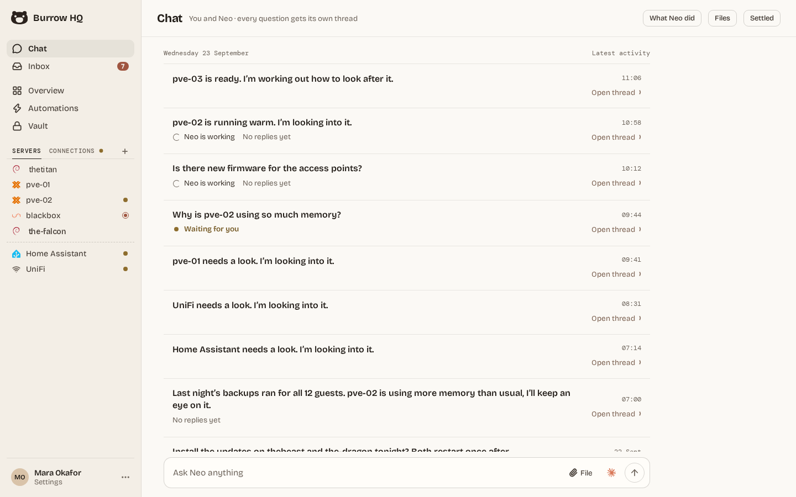

02 / Chat list · mockups only
The question first.
Where it stands, right under it.
A topic, one stage, anything new, and the time. Your own name and face leave your rows. Chat keeps its time order; the Inbox is where decisions come first.


No fixture-only native build was available for Groundwork. A phone-width website is not a native before picture.


Both pictures use the same frozen fixture world. The unchanged web shell comes from the before picture; only the row region is replaced.
One stage, always from the flags.
That is also the overlap order: waiting wins, then working, then handed over, then settled. No flag means no stage word. “New reply” comes separately from unread; it never becomes a stage.
Extra cases, kept out of the baseline picture.
The example sheet includes handed-over work, a new reply, an unanswered question, a 200-character question, a reply error, and the existing Settled shelf. It identifies the shipped fixture states separately from local sample inputs.
Assistant-written summary · a separate choice.
needs new data / Decision for John
A sentence in the assistant’s words and a button naming the decision could explain more. That needs an explicit summary and a reliable link to the waiting ask. The buildable version above makes neither up.
Compare the summary and matching Inbox item →What stays shipped, and what needs a decision
The before version keeps UIR-64’s waiting chip and Answer, UIR-66’s faces/reply-count/time link, AP-7417’s joined reply/waiting line, AP-2454’s sender-led phone list and TU-05’s unread dot. The proposed version changes their presentation: question-led rows, a single stage and an explicit “New reply”. It does not change the underlying flags, read markers or settle rules.
Settled stays a separate shelf. Settle, its restrictions and Undo stay. The proposed list uses chats.threads’ newest-first order. The web room screenshot is a message timeline with oldest first; turning that surface into this thread list is included in the layout decision, not described as already shipped.
The native row is a static HTML study with shared fixture inputs. iOS’s real system tab bar and Android’s real navigation are not verified by these pictures. Both remain explicit capture gaps.